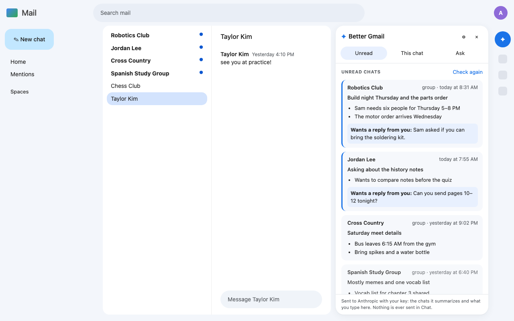

✦ Better Gmail
An AI side panel for Gmail and Google Chat, using your own Anthropic API key. It summarizes the email you open, sorts today's inbox, catches you up on every unread chat at once, and writes replies in your own voice or any tone. What it writes goes into Gmail's own box, and you press Send.
There is no Better Gmail server. Your mail goes only to Anthropic, with your key. It never sends, deletes or reports spam, and it changes your mail only after you confirm a checklist.
